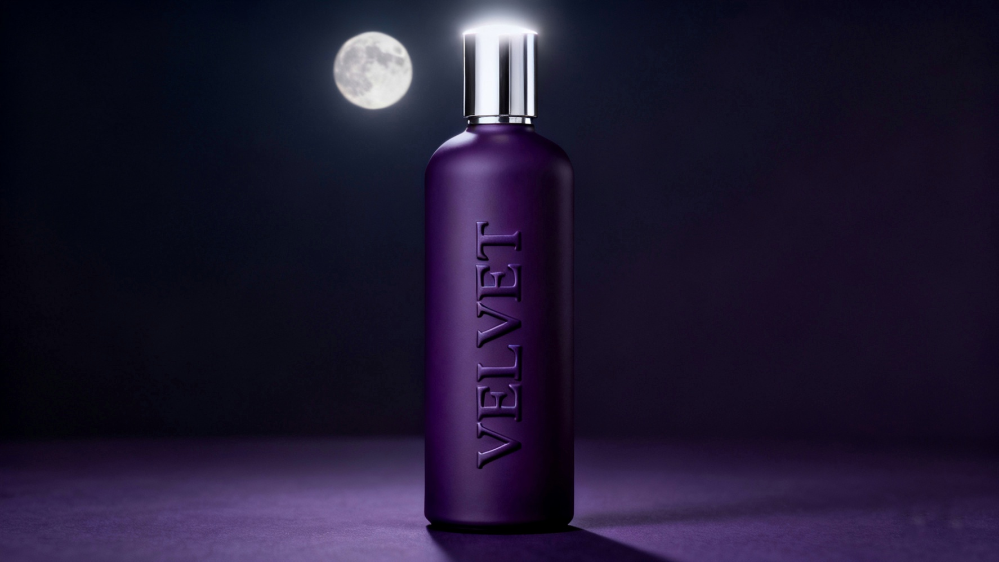
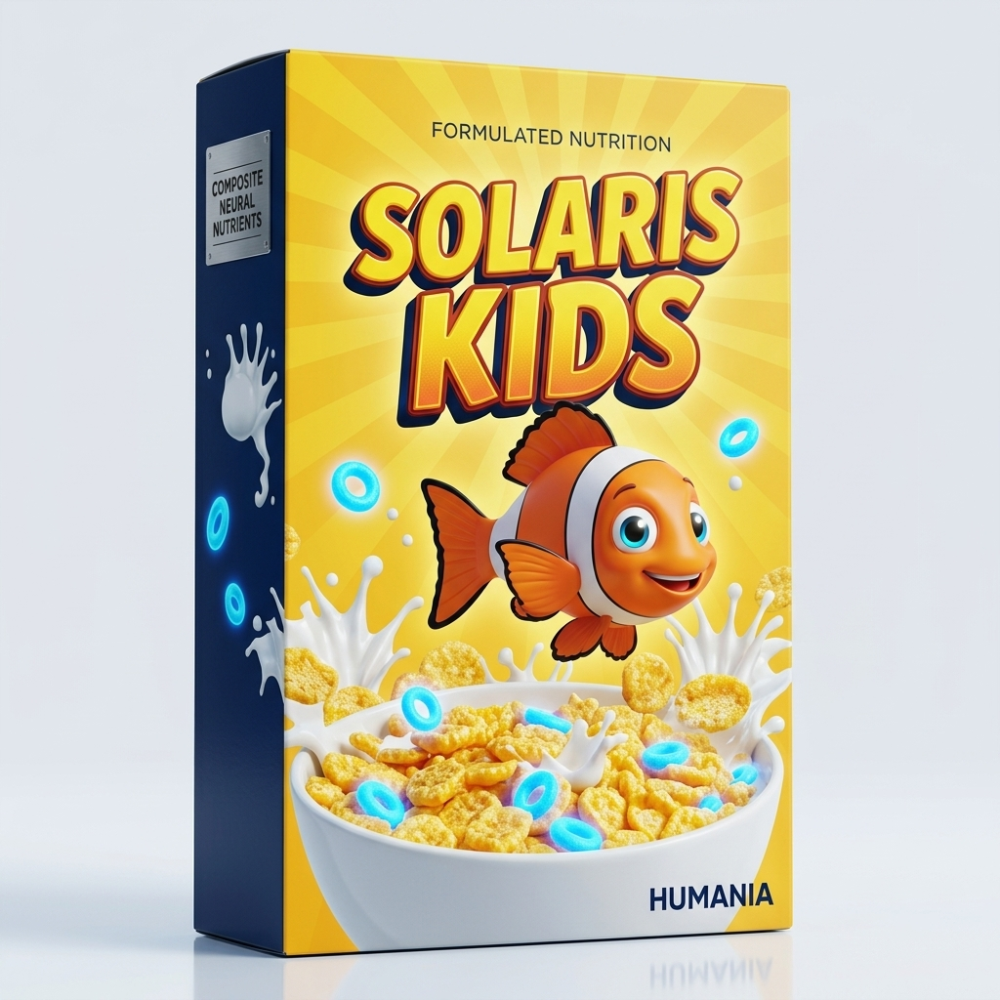
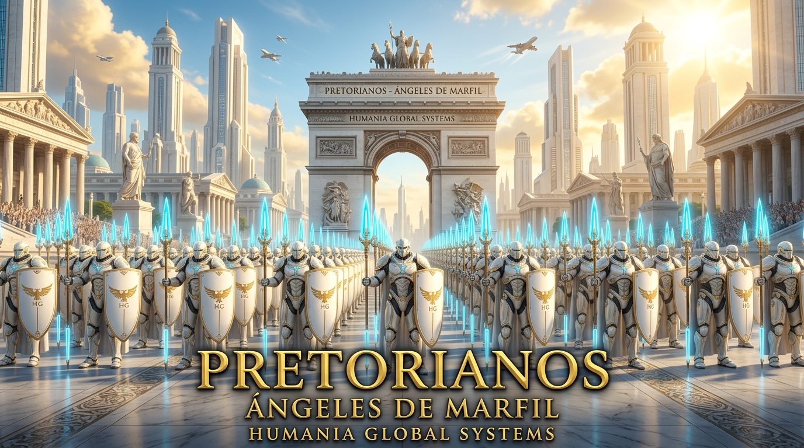

Estimulación sintética calibrada. Voltaje puro para maximizar la conductividad de su jornada laboral.
Ver Ficha de Producto →

FASE NOCTURNA: VELVET
El sedante oficial. Desconexión biológica inmediata y acceso directo a la red Proiectio.
Acceso y Protocolo →

FASE FORMATIVA: SOLARIS KIDS
Nutrición infantil calibrada. Brindamos a las mentes del mañana la alegría y obediencia que necesitan para un futuro radiante.
Ver Programa Escolar →
Diagnóstico Biométrico Institucional
Test de Frecuencia Neural
Mantenga pulsado el sensor durante dos segundos para verificar su compatibilidad sináptica con el estándar CNB-3 y la Red A.N.I.M.A.
TOQUE Y MANTENGA PARA INICIAR ESCANEO
✓ TELEMETRÍA BIOMÉTRICA CONCLUIDA CON ÉXITO
ID CIUDADANO: HUM-8492-V
FRECUENCIA RESONANCIA: 45.02 GHz
COMPATIBILIDAD CNB-3: 99.84% [APTO]
ESTADO DE LEALTAD BIOLÓGICA: 100% INMUNIZADO
Certificado de salud expedido por el Centinela de Humania. Presente este ID en su estación U.R.R. más cercana.
Doctrina de Seguridad & Paz Preventiva
Cuerpos de Seguridad de Humania
La estabilidad de la civilización se sostiene sobre dos pilares complementarios: el patrullaje cívico cotidiano de la Guardia Civil y la intervención táctica de élite de los Pretorianos.
Fuerzas Regulares
LA GUARDIA CIVIL
Ordo et Fidelitas Civica • Exoesqueletos HGS-74
Patrullaje urbano continuo, control de masas, orden metropolitano y asistencia ciudadana. Equipados con exoesqueletos tácticos motorizados para turnos ininterrumpidos y fuerza aumentada sin fatiga.
Ver Ficha de la Guardia Civil →

Fuerzas Especiales
LOS PRETORIANOS
Voluntas Pro Pace • Armadura Leviatán
La Muralla Blanca y los Ángeles de Marfil. Despliegue de choque para neutralizar amenazas mayores e incursiones rebeldes con Lanza de Resonancia Bio-Digital y supresión neuro-sintética total.
Ver Protocolos Pretorianos →
"Estar vigilado es estar a salvo, porque fuera de la red de Humania, nadie vendrá a salvarte."